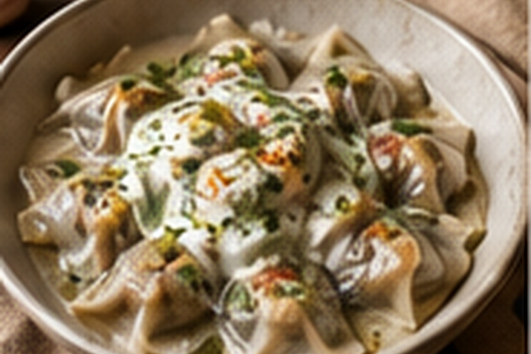

Afghan Ashak
Delicate allium-filled dumplings layered with cool garlic yogurt, savory tomato sauce and dried mint.

About this dish
Ashak, also written aushak, are Afghan dumplings traditionally filled with gandana, a leafy allium often translated as Afghan leek or chive. The dumplings are usually served with yogurt and a savory topping rather than eaten plain. This home version uses leeks and scallions because they are easier to source while preserving the fresh allium character at the center of the dish.
The supporting sauces are part of the architecture of the plate, not optional decoration. Have the Afghan garlic yogurt and Afghan tomato sauce ready before the dumplings are cooked.
A communal dumpling built for gathering
Afghan cooks commonly describe ashak as food for family meals, holidays and gatherings because assembling the dumplings rewards many hands. Contemporary Afghan food writers also distinguish ashak from meat-filled mantu by its green allium filling and layered yogurt-and-sauce finish.
SBS Food's 2026 feature with Afghan writer Durkhanai Ayubi describes ashak-making as a powerful family memory and notes that relatives and friends often gather to form the dumplings together. That communal preparation is part of what makes the dish more than simply filled pasta.
Gandana, wrapper shape, cooking method and toppings vary by household. This is a practical home adaptation rather than a claim to a single definitive Afghan version.
Preparation notes
Wet alliums make wrappers slippery and harder to seal. After salting, squeeze the filling lightly if it releases a lot of liquid.
About 2 teaspoons per wrapper is enough. A clean border seals more reliably and reduces blowouts in the pot.
Ashak are best as soon as they are drained. The yogurt and tomato sauce should already be at serving temperature.
Ingredients & detailed method
Ingredients
- 24 dumpling wrappers
- 2 cups finely sliced leeks, washed very well
- 1 cup thinly sliced scallions
- 1 tsp ground coriander
- 1/2 tsp kosher salt
- 1 cup Afghan garlic yogurt
- 1 cup Afghan tomato sauce
- Dried mint, for finishing
Method
- 1.Prepare the sauces first. Make or warm the tomato sauce and have the garlic yogurt ready at cool room temperature.
- 2.Make the filling. Combine leeks, scallions, coriander and salt. Massage with your fingertips for about 30 seconds. Checkpoint: the greens should soften slightly without becoming wet and mushy.
- 3.Set up a sealing station. Keep wrappers covered with a barely damp towel and place a small bowl of water nearby.
- 4.Fill. Put about 2 teaspoons filling in the center of a wrapper. Wet the border lightly, fold and press firmly from the center outward to push out trapped air.
- 5.Check the seal. Run your fingers along the edge once more. Checkpoint: there should be no visible gaps and no filling caught in the seam.
- 6.Bring water to a controlled boil. Use a wide pot of well-salted water. A rolling violent boil can tear delicate wrappers, so reduce to a steady gentle boil before adding dumplings.
- 7.Cook in batches. Add only enough ashak to move freely. Cook 3–5 minutes, stirring once very gently after the first minute.
- 8.Check doneness. Lift one dumpling with a slotted spoon. Checkpoint: the wrapper should look slightly translucent at the filling and feel tender rather than floury at the folded edge.
- 9.Drain thoroughly. Transfer to a rack or colander for 30–60 seconds so trapped water does not dilute the sauce.
- 10.Layer and serve. Spread garlic yogurt on a platter, arrange the ashak over it, spoon tomato sauce across the dumplings, then finish with more yogurt and dried mint.